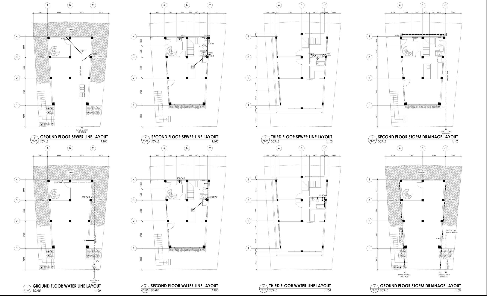

The whole structure, from string lines to paint, built up one stage at a time in 24 steps. Every bar size, spacing and level comes from the D.V. Fallarme construction plans (sheets S1-05 and S2-06). Tap Next to add the next stage.
Your actual frame, modeled from the framing plans (S1-05), elevations and sections (A3-03): a tapered plan 5.30m wide at the road and 6.59m at the rear, a garage cut into the slope, side stairs up the A side, and a 3rd floor that cantilevers 1.1m out over the front. Viewed from the front-left, like the perspective on A1-01. New parts flash in when they're added.
You are off the plan. The 3D view, tap details and materials now use your choices. Any substitute changes the signed design, so get the engineer's written approval first. Ties in earthquake confinement zones are the riskiest place to downgrade.
Lap length is not given in the plans (assumed). Ask the engineer. 40 × diameter is a common starting point.
Every line in the footing, column and beam schedules uses the same short codes.
#12 / 12mmØBar diameter in millimeters. #12 is a 12mm bar.@ 200 C/CSpacing, center to center, in mm.4-#20Quantity and size: four 20mm bars.9-2L-#10@759 closed 2-leg stirrups of 10mm bar, 75mm apart.C21 / C28Concrete strength in MPa. C21 ≈ 1:2:4 for footings, beams and slabs. C28 ≈ 1:1.5:3 for columns.Fy415Grade 60 rebar: 415 MPa minimum yield. Used for footings, tie beams, columns and beams. Don't substitute Grade 40.FY276Grade 40 rebar: 276 MPa minimum yield. The plans allow it only for the 2nd and 3rd floor slab bars.L × B × D1Footing length, breadth and thickness. D2 is only for stepped footings (blank here).B × DBeam width × depth. B1 at 200 × 400 is 200 wide, 400 deep.SCR zone 450Confinement zone at each column end, where ties go closer (75mm).EFEach face. 1-#12EF means one 12mm web bar on each side face.Plans and cuts of the typical members. Bar spacing is exaggerated where it helps you see the two zones.
Copied from sheet S2-06. Tables scroll sideways on a phone.
All pads are square, 300mm thick (D1). Top mat is #12 @ 300 both ways on every footing.
| Mark | Col | L × B | Bottom mat | Bars/way* |
|---|
*Approximate, with 75mm cover each side. The foundation plan labels the row-1 C footing "C12-FC12", but the schedule has C11/FC11 there, likely a typo. C12–C21 start at the 3rd floor and have no footings.
Schedule bands: 0–1.8, 1.8–4.65, 4.65–8.05 and 8.05–11.3m, measured from the footing. Most main columns stop at the 3rd floor. In the 3rd storey only C5 and C8 continue, joined by new columns C12–C21 on the cantilevered edges.
| Band | Size | Main bars | Ties |
|---|---|---|---|
| Footing → garage | 300×300 / 400×400 | 4-#20 (C1–C9) · 8-#16 (C10–C11) | #12@75 + #10@150 |
| Garage storey | 300×300 / 400×400 | 4-#20 (C1–C9) · 8-#16 (C10–C11) | #12@75 + #10@150 |
| 2nd storey | 300×300 / 400×400 | 4-#32, 4-#25, 4-#20 · 8-#20 (C10–C11) | #12@75 + #10@150 |
| 3rd storey | C5, C8: 300×300 · C12: 300×300 · C13–C21: 200×300/400 | 4-#20 to 4-#32 · 4-#16 to 6-#16 | C5, C8, C12: #12@75 + #10@150 · C13–C18, C21: #12@50 + #10@100 · C19, C20: #10@50 + #10@100 |
SCR (confinement) zone is 450–545mm depending on the mark.
| Level | B × D | Typical bars | Stirrups (ends / mid) |
|---|---|---|---|
| Footing tie | 200×300 | 2-#16 top, 2-#12/#16 bot | 9 @ 75 / @ 90 |
| 2nd floor | 200×400 | 2-#16 top, 2-#12 to #25 bot | 11–12 @ 75–80 / @ 115 |
| 3rd floor | 200×400, 150×500 | 2-#12/#16 top, up to #25 bot | @ 75–125 / @ 115–125 |
| Roof beam | 200×300, 150×500 | 2-#12 top and bottom | 9 @ 75 / @ 90 |
Several 3rd-floor and roof beams are cantilevered. Check each mark on S2-06.
| Slab | Thick | Bars |
|---|---|---|
| Ground (on fill) | 100 | #10 @ 600 both ways |
| 2nd floor S1–S8 | 100 | #10 @ 150, 1-way and 2-way |
| 3rd floor S1–S21 | 100 | #10 @ 150, 1-way and 2-way |
Top bars at supports (bent-up or continuous) per the slab schedule. Use L/4 for top-bar extension per detail 7.
From the material line of each schedule on S2-06. The general notes on S1-05 add no other grade.
| Member | Concrete | Rebar | Source |
|---|---|---|---|
| Footings FC1–FC11 | C21 | Fy415 · Grade 60 | Footing schedule |
| Footing tie beams | C21 | Fy415 · Grade 60 | Beam schedule, footing tie beam |
| Columns C1–C21, all four bands | C28 | Fy415 · Grade 60 | Column schedule, every column |
| 2nd floor, 3rd floor and roof beams | C21 | Fy415 · Grade 60 | Beam schedules, 3 levels |
| 2nd and 3rd floor slabs | C21 | FY276 · Grade 40 | Slab schedules, 2 levels |
| Column ties, beam stirrups (#10, #12) | As member | Not stated separately; the member grade is assumed | Ask the engineer |
| Slab on fill, stairs, CHB walls, parapet, planters, septic tank, catch basin | Not given | Not specified | Ask the engineer |
Fy is the minimum yield strength in MPa: Fy415 = 415 MPa (Grade 60), FY276 = 276 MPa (Grade 40). C21 and C28 are 21 and 28 MPa concrete. When the bars arrive, match the grade on the mill certificate and the mark rolled on the bar. Never use Grade 40 where Grade 60 is called for.
Grade 33 (fy 230 MPa) is weaker than what the plans call for. To keep the same strength, each meter of mat needs at least the same bar area × yield strength as the plan. These are the closest spacings, rounded down to 5mm. The engineer must approve any substitution in writing.
| Mat | Plan | 12mm Grade 33 instead |
|---|
Footing mats are Grade 60. Grade 33 would need about 1.8 times the bars and crowd the footing. The numbers below are for reference only. Use the Grade 60 bars the plans call for.
| Footing | Plan: #12 Grade 60 | 12mm Grade 33 equivalent |
|---|
Ties and stirrups hold the main bars in place and confine the concrete in an earthquake. Grade 33 ties need much closer spacing, and many engineers won't accept them in confinement zones. Under 50mm spacing is very tight; under about 37mm the gap between ties is smaller than the gravel and the concrete can't flow.
| Ties / stirrups | Plan (Grade 60) | 12mm Grade 33 equivalent |
|---|
Keep 20mm bottom cover in the slabs. 12mm bars both ways take 4mm more depth than 10mm, so check the top cover. Top bars at supports change the same way. Buy from a mill that gives a certificate showing the grade.
The pipes and wiring also appear in the 3D build above (turn them on or off with "Pipes & wiring"). Tap a pipe, tank or panel for its size. Below are the original sheets and the main data from them.

| Sewer | 100mm PVC mains, 75mm branches, 1% min. slope |
| Soil and vent stacks | 100ØSS (T&B 1 and 2), 75ØSS (service area), 50ØVS |
| Septic tank | 2.50 × 1.30 × 1.80m, digestive + leaching chambers, 150mm CHB |
| Water | 20mm PPR main from GV, meter, CV at the front; 20ØCWR risers |
| Storm | 75ØDS downspouts; perforated 100mm PVC with filter cloth around the garage |
| Catch basin | 400 × 400 min., 100mm CHB, 10mm bars @ 300 |
| Fixtures | WC, LAV, shower (×2 T&B) · kitchen sink · floor drains · hose bibb |
| Supply | 230V, 1-phase, 2-wire + ground, 60Hz, overhead |
| Feeder | 2-38mm² THHN + 1-8mm² THHN ground in 25mmØ RSC, concrete encased |
| Main breaker | 125AT 125AF 2P, NEMA 3R, at the service post |
| Panel LPP | 18 circuits · total 29,770 W · 129.42 A |
| Branch wiring | 2-3.5mm² + 1-3.5mm² ground THHN in 20mm PVC |
| Solar | Roof panels → inverter + battery bank → net meter (25mmØ PVC) |
| Voltage drop | All circuits under 2% (feeder 0.75%), all acceptable |
The lighting circuits match the floors: CKT 1 garage, CKT 2 2nd floor, CKT 3 3rd floor. The convenience circuits follow the same order (CKT 4–6).
| CKT | Load | Qty | Watts | Amp | Breaker |
|---|---|---|---|---|---|
| 1 | Lighting outlets | 14 | 700 | 3.04 | 15AT 2P |
| 2 | Lighting outlets | 26 | 1,300 | 5.65 | 15AT 2P |
| 3 | Lighting outlets | 29 | 1,450 | 6.3 | 15AT 2P |
| 4 | Convenience outlets | 3 | 540 | 2.35 | 20AT 2P |
| 5 | Convenience outlets | 11 | 1,980 | 8.61 | 20AT 2P |
| 6 | Convenience outlets | 13 | 2,340 | 10.17 | 20AT 2P |
| 7 | Range outlet | 1 | 2,000 | 8.7 | 20AT 2P |
| 8 | Refrigerator outlet | 1 | 500 | 2.17 | 20AT 2P |
| 9 | Microwave outlet | 1 | 1,500 | 6.52 | 20AT 2P |
| 10 | ACU 2.0HP | 1 | 2,760 | 12.0 | 20AT 2P |
| 11 | ACU 2.0HP | 1 | 2,760 | 12.0 | 20AT 2P |
| 12 | ACU 2.0HP | 1 | 2,760 | 12.0 | 20AT 2P |
| 13 | ACU 1.0HP | 1 | 1,840 | 8.0 | 20AT 2P |
| 14 | ACU 1.0HP | 1 | 1,840 | 8.0 | 20AT 2P |
| 15 | Water heater | 1 | 1,500 | 6.52 | 20AT 2P |
| 16 | Water heater | 1 | 1,500 | 6.52 | 20AT 2P |
| 17 | Spare | 1,500 | 6.52 | — | |
| 18 | Spare | 1,000 | 4.35 | — | |
| Total | 29,770 | 129.42 | 125AT main |